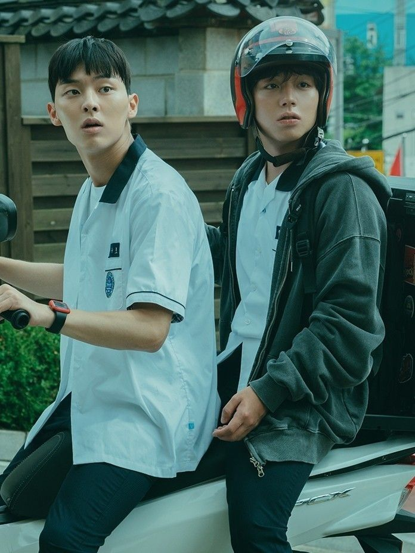
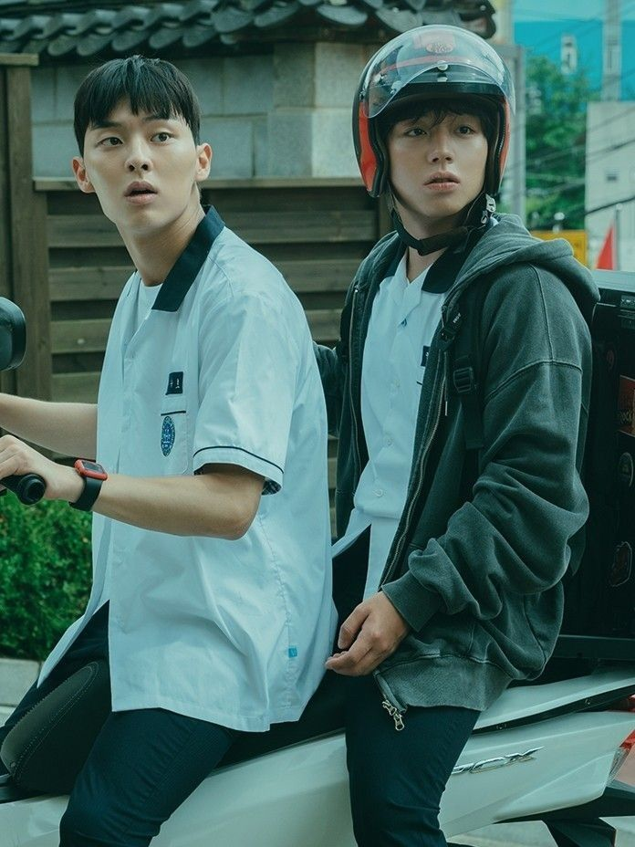

Indice
Ficha Técnica
- Título:약한영웅 Class 1 / Yaghanyeongung Class 1 (Título en inglés: Weak Hero Class 1)
- Periodo de emisión:18-Noviembre-2022
- Horario:Viernes
- Temporadas:1 (8 episodios)
- País:Corea del Sur
- Director:Park Dan-hee
- Guión:You Su-min (Adaptado del Webtoon de Seo Pae-Seu y Kim Jin-Seok)
Sinopsis
Un drama de acción y crecimiento sobre Yeon Shi Eun, un estudiante modelo con calificaciones que pertenecen al 1% superior de la escuela. Se ve débil pero lucha contra numerosas violencias dentro y fuera de la escuela. Representa a un niño naturalmente débil en términos de apariencia, dominando una escuela parecida a una jungla usando su cerebro, poder analítico y herramientas.
Trailer
Opinión
Para mi WHC1 logra transmitir una problemática muy real en la sociedad coreana: el acoso escolar. En un país donde este fenómeno es tan prevalente, esta obra ofrece una perspectiva cruda y desgarradora sobre sus consecuencias.
La serie no solo muestra la crueldad del acoso, sino también cómo esta situación fuerza a las víctimas a buscar soluciones por sí mismas, a menudo en un entorno hostil que les ofrece muy pocas alternativas. El retrato de la lucha diaria por sobrevivir en un ambiente tan tóxico es desgarrador y provoca una mezcla de emociones que van desde la frustración hasta la ira y el dolor profundo.
Destaco sobre todo cómo Park Ji-hoon y Choi Hyun-wook interpretaron sus papeles. Ellos son el alma de la historia y transmiten de manera increíble la angustia y el dolor de quienes sufren acoso. Sus actuaciones fueron geniales, realmente te hacen conectar con los personajes y sentir su sufrimiento de una manera muy auténtica. Añaden una capa de verdad y humanidad a la trama, que, aunque exagerada en la serie, refleja una realidad desgarradora que muchas personas enfrentan día tras día.
Reparto
Estudiantes de la Secundaria Byeoksan
- Park Ji Hoon como Yeon Shi Eun
- Choi Hyun Wook como Ahn Su Ho
- Hong Kyung como Oh Beom Seok
- Lee Yeon como Young Yi
- Shin Seung Ho como Jeon Seok Dae
Profesores de la Secundaria Byeoksan
- Yum Ji Young como Profesora de aula
- Jang Myung Jin como Profesor de gimnasia
- Kang Min Soo como Profesor de matemáticas
- Kim Da In como Profesor de historia coreana
- Kim Hyun como Directora
Grupo de Jeon Seok Dae
- Jang Tae Hyun como pelo largo
- Chun Myung Woo como Crong
- Na Chul como Kim Gil Soo
- Cha Sung Je como Sung Chan
Producción
- Director: You Su Min (유수민)
- Guionista: You Su Min (유수민)
Premios
- 2023 Korea Drama Awards: Best New Actress (Lee Yeon)
- 2023 Korea Drama Awards: Best New Actor (Park Ji Hoon)
- 2023 Asia Contents Awards & Global OTT Awards: Best OTT Original
- 2023 2nd Blue Dragon Series Awards: Best Rookie Actor (Park Ji Hoon)
- 2023 2nd Blue Dragon Series Awards: Why Not Award (Choi Hyun Wook)
Curiosidades
- Basado en el webcomic "Yakhanyoungwoong" escrito por Seo Pae Seu e ilustrado por Kim Jin Seok (publicado por primera vez el 5 de mayo de 2018 a través de Naver).
- La producción del drama confirmó la realización de dos temporadas aún antes de filmar la primera.
- Es la segunda vez que Park Ji Hoon y Kim Su Gyeom trabajan juntos, la primera vez fue en At a Distance, Spring is Green.
- Es la segunda vez que Kim Su Gyeom y Lee Yeon trabajan juntos, la primera vez fue en Juvenile Justice.
Galería de imágenes
 
